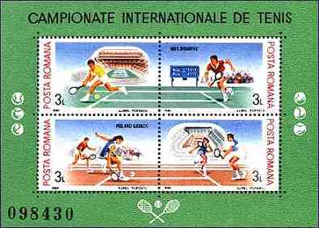
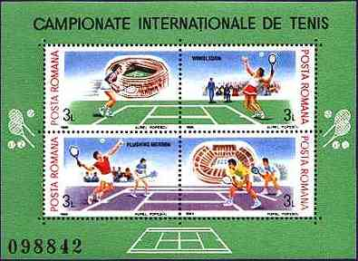
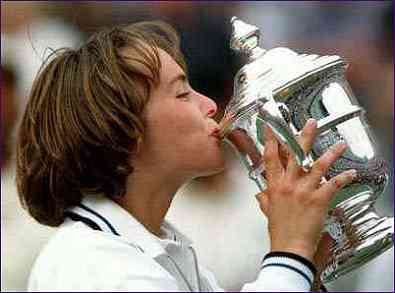
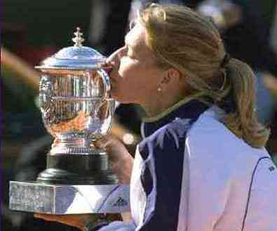
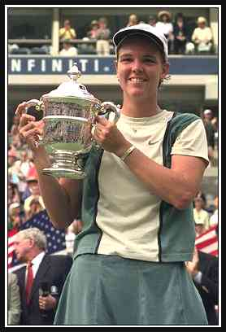
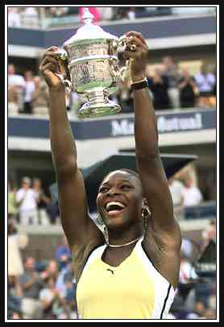
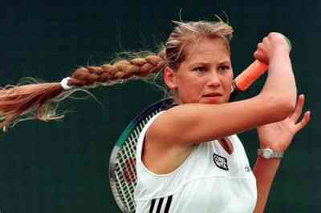
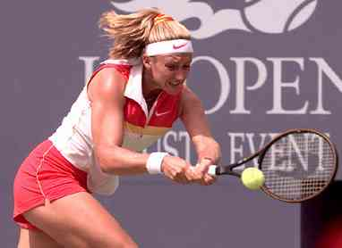
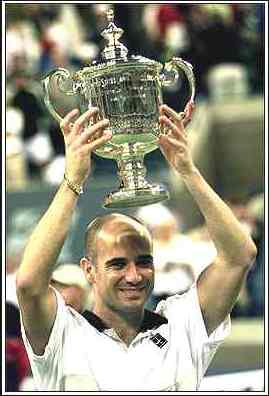
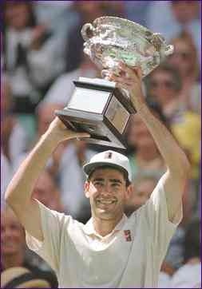

Grand Slam Tournaments
 |
 |
Grand Slam Tennis Championships. Two
Romanian Souvenir Sheets, issued Aug. 22, 1988. Scott No. 3547-3548,
Michel Block No. 244-245.
This stamp issue covers the following subjects:
- Australian Open. Men's singles, stadium in Melbourne
- Australian Open. Men's singles, scoreboard
- French Open, . Mixed double, spectators
- French Open. Mixed double, stadium in Rolland Garros
- Wimbledon. Women's single, stadium in Wimbledon
- Wimbledon. Women's single, spectators
- US Open. Men's double, spectators
- US Open. Men's double, stadium in Flushing Meadows.
Grand Slam Tennis Championships 1999
Women's Single Winners
 |
 |
| Martina Hingis (CH), Australian Open | Steffi Graf (D), French Open |
 |
 |
| Lindsay Davenport (USA), Wimbledon | Serena Williams (USA), US Open |
Other Remarkable Tennis Players
 |
 |
| Anna Kournikova (RU) | Mary Pierce (FR) |
After
gaining a leadership position in the world tennis, Andre Agassi (USA)
suddenly ranked No. 124 in 1997. Two years later, in 1999, after a
spectacular come back, he finished as the ATP No. 1. During this year he
won two Grand Slam single tournaments, the US Open and the Rolland Garros
(French Open) .
Pete Sampras (USA) won the World Championships 1999
(3-0 against Agassi, in Hanover, Germany). It is the 5th World
Championship title for the greatest tennis player of the last decade and
eventually of the whole 20th century.
 |
 |
Ayn Rand Bill Gates Martina Hingis Bertrand Piccard J.W von Goethe